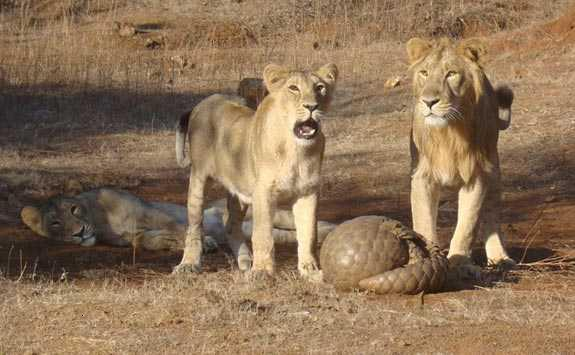

Pangolins are considered to be a mammal despite having scales like a reptile. Their scales are made from keratin which is the same material that makes human fingernails. The pangolin can roll up like a ball to protect themselves from predators!
Pangolins are insectivorous. Their diet consists mostly of the insects listed above, though the pangolin is somewhat particular, and tend to eat only one or two species of insects, even if there are many more available. A pangolin can consume 5-7 ounces of insects a day. They are also important regulators of termites in their natural habitats.
Click here to find out more about the Pangolin's habitat!
Pangolins are in demand for Chinese traditional medecine in southern China, and Vietnam, because their scales are believed to have medicinal properties. Their meat is also
considered a delicacy. According to BBC 100,000 are estimated to be trafficked a year to China and Vietnam. Over the course of a decade, that would add up to over 1 million pangolins trafficked, which makes them the most trafficked animal in the world.
As a result of increasing threats to pangolins, mostly due to the trade of scales and meats, the species has drawn a lot of attention in recent years. As of January 2020 the International Union for Conservation of Nature considered all 8 species of pangolin on its red list of threatened species.
ALL INFORMATION SOURCED THROUGH WIKIPEDIA